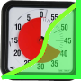

|
Welcome to Dennis Lang's Source Code and Performance Metrics
lang.dennis@gmail Updated: 21-Feb-2010 |
C++ TimeMe (measure program execution) - v1.1 (March 2010)
|  |
Download:
|
Description
TimeMe is a C++ program which measures several Performance Counters of a target application.This program is modeled after the TimeIt program provided with the Microsoft 2003 Resource Kit. The reason I wrote TimeMe is MS's TimeIt does not run on Windows7.
There are no switches or options to TimeMe, unlike the MS program TimeIt. Everything after the program name is assumed to be part of the target program to be measured.
TimeMe starts the target program suspended, then creates several Performance Counters and then resumes program execution. The target program is also run under debug trace mode so the program exit can be detected to grab the process specific counter values before the program exits.
Sample output:
Output of TimeMe: TimeMe netstat -sr
. . . stuff output from netstat
=TimeMe Thu Mar 04 20:42:40 2010 =Exit Time netstat -srna =Performance Counters: 0.9219 =Elapsed Seconds 40 =%Process Usage 5 =%User Time 1346 =Page Faults 39186432 =Virtual Byte Peak 5001216 =Working Set Peak 29727 =System Calls 6185 =System Context Switches 65218 =System ~Bytes Read 5332 =System ~Bytes Written 445747 =System ~Bytes Other 0 =Processor(s) % DPC Time 0 =Processor(s) % Interrupt Time 41 =Processor(s) % Privleged Time 52 =Processor(s) % Processor Time 11 =Processor(s) % User Time 138 =Processor(s) ~DPCs Queued 1000 =Processor(s) ~Interrupts =Process Counters: 20:42:39.0174 =Creation 81 =Handle Count 1346 =PageFaults 5001216 =Working Set Peak 1 =Read IO calls 0 =Write IO calls 854 =Other IO calls
TimeMe systeminfo . . . stuff output from systeminfo
=TimeMe Thu Mar 04 20:40:12 2010 =Exit Time systeminfo =Performance Counters: 22.5000 =Elapsed Seconds 2 =%Process Usage 1 =%User Time 1584 =Page Faults 40443904 =Virtual Byte Peak 5799936 =Working Set Peak 747833 =System Calls 173385 =System Context Switches 2877685 =System ~Bytes Read 1802219 =System ~Bytes Written 1759880 =System ~Bytes Other 0 =Processor(s) % DPC Time 0 =Processor(s) % Interrupt Time 16 =Processor(s) % Privleged Time 30 =Processor(s) % Processor Time 14 =Processor(s) % User Time 6322 =Processor(s) ~DPCs Queued 30180 =Processor(s) ~Interrupts =Process Counters: 20:39:49.0659 =Creation 20:40:12.0159 =Exit 0:00:22.0500 =Elapsed 49 =Handle Count 1595 =PageFaults 5799936 =Working Set Peak 4 =Read IO calls 2 =Write IO calls 643 =Other IO calls
The Microsoft TimeIt program has severeal command line switches and stores results in a database. My version of TimeMe appends the results to a text file 'TimeMe.log' but does not support any of the MS options.
Top
Microsoft TimeIt Help banner:
timeit -? Invalid switch -? Usage: TIMEIT [-f filename] [-a] [-c] [-i] [-d] [-s] [-t] [-k keyname | -r keyname] [-m mask] [commandline...] where: -f specifies the name of the database file where TIMEIT keeps a history of previous timings. Default is .\timeit.dat -k specifies the keyname to use for this timing run -r specifies the keyname to remove from the database. If keyname is followed by a comma and a number then it will remove the slowest (positive number) or fastest (negative) times for that keyname. -a specifies that timeit should display average of all timings for the specified key. -i specifies to ignore non-zero return codes from program -d specifies to show detail for average -s specifies to suppress system wide counters -t specifies to tabular output -c specifies to force a resort of the data base -m specifies the processor affinity maskSample output:
Version Number: Windows NT 5.1 (Build 2600) Exit Time: 9:56 pm, Sunday, February 21 2010 Elapsed Time: 0:00:00.593 Process Time: 0:00:00.218 System Calls: 27206 Context Switches: 6454 Page Faults: 3410 Bytes Read: 61216 Bytes Written: 0 Bytes Other: 443618